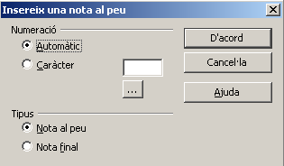
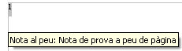
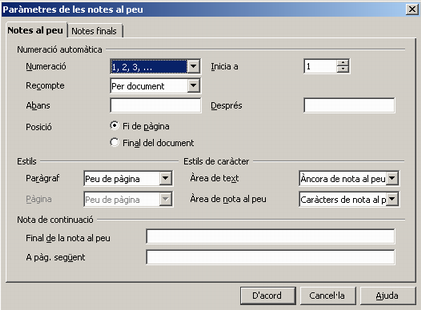

Notes a peu de pàgina i de document
Una nota és un text numerat a peu de pàgina, o al final del document, referenciat en el document amb el mateix número. Per fer-ho, aneu al menú Insereix | nota al peu…  El text de les notes es pot veure, no només a l'àrea de notes sinó en el mateix punt de la seva inserció després d'apuntar-hi el ratolí; la nota es visualitza en una espècie de nota de paper i el text es visualitza en un requadre.  Per editar el text d'una nota al peu o final situeu-vos sobre la nota. Es poden eliminar suprimint la seva marca. Amb el menú Eines | notes al peu es poden configurar algunes opcions tal com veieu en la imatge següent. Canviant de pestanya podrem configurar les notes finals. Si, a Posició, escollim Final del document, ens posarà totes les notes al final. 
- Recupereu el fitxer educació.odt.
- Traslladeu les explicacions entre parèntesis i alguns termes llatins a notes a peu de pàgina.
- Localitzeu el primer terme llatí mos maiorum i seleccioneu-lo amb el ratolí (eviteu seleccionar els parèntesis).
- Premeu Ctrl+X per retallar-lo i esborreu els parèntesis.
- Demaneu Insereix | nota al peu….
- De la finestra de diàleg que obtindreu, comproveu que són actives les opcions Numeració: automàtic i Tipus: nota al peu.
- Premeu el botó d'acord.
- LibreOffice Writer inserirà, a peu de pàgina, el número 1 i queda a l'espera que s'introdueixi el text corresponent a la nota.
- Premeu Ctrl+V per enganxar el text que s'havia retallat abans (mos maiorum). Si es desitja, es pot introduir qualsevol altre text.
- Feu clic sobre el número que s'ha inserit al peu de pàgina i torneu al text.
- Observeu que, en situar el ratolí a sobre del número 1 del text (sense prémer cap botó), el punter del ratolí canvia de forma i molt poc després apareix, en un requadre, el text introduït en la nota al peu.
- De la mateixa manera que s'ha explicat, afegiu la resta de termes en llatí com a notes a peu de pàgina.
- Modifiqueu la posició de les notes en cada pàgina i convertiu-les en notes al final del document.
- Aneu al final del document (Ctrl+Fin).
- Demaneu Eines | notes al peu… | (pestanya) notes al peu.
- Del bloc Posició, seleccioneu Final del document i premeu el botó d'Acord.
- Deseu el document.

|
|

|
|